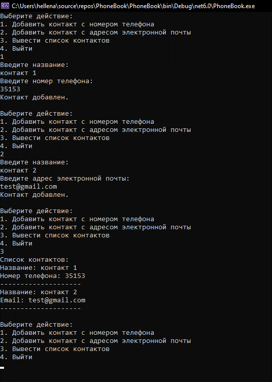

3. Запустите приложение и протестируйте работу:

В итоге, ваша телефонная книга должна в себе содержать и одинаково работать как с электронной почтой, так и с номерами телефонов.
Последующее расширение функционала и добавление новых типов контактов не повлечет за собой изменение существующего кода, а только добавление нового. Именно данный аспект является преимуществом паттерна «фабричный метод»
Протестируйте работу фабричного метода путем самостоятельного добавления в приложение нового типа контакта